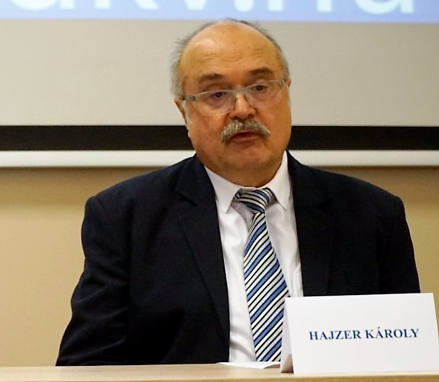
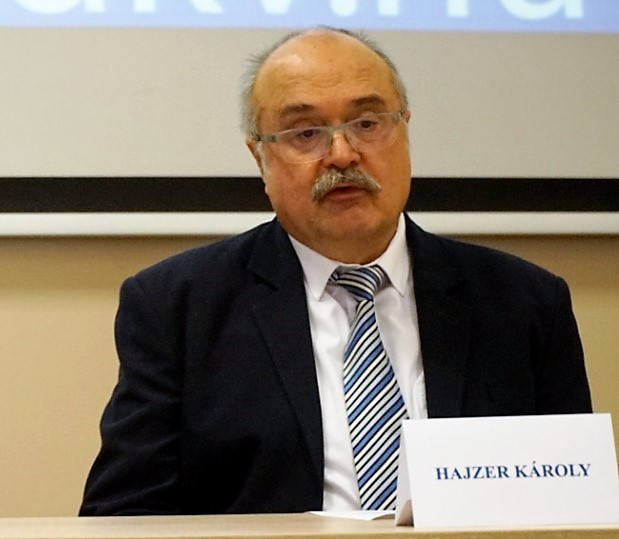
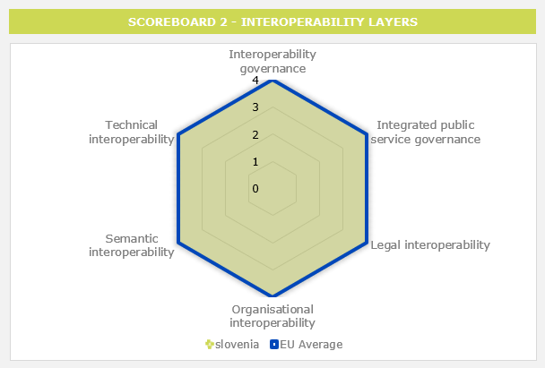
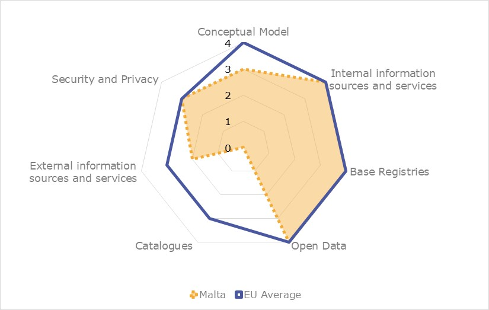
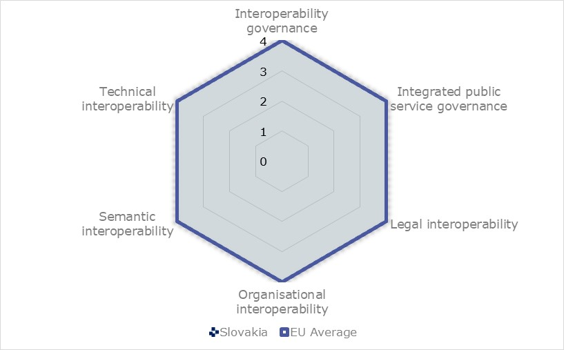

Digital Public Administration factsheet 2021
Slovenia
Digital Public Administration factsheet 2022
Table of Contents
2 Digital Public Administration Highlights 10
3 Digital Public Administration Political Communications 13
4 Digital Public Administration Legislation 22
5 Digital Public Administration Governance 31
6 Digital Public Administration Infrastructure 37
7 Cross border Digital Public Administration Services for Citizens and Businesses 57
Country
Profile
1
Country Profile
Digital Public Administration Indicators
The following graphs present data for the latest Digital Public Administration Indicators for Slovenia compared to the EU average. Statistical indicators in this section reflect those of Eurostat at the time the Edition is being prepared.
Percentage of individuals using the internet for interacting with public authorities in Slovenia | Percentage of individuals using the internet for obtaining information from public authorities in Slovenia | ||
Percentage of individuals using the internet for downloading official forms from public authorities in Slovenia | Percentage of individuals using the internet for sending filled forms to public authorities in Slovenia | ||
Interoperability State of Play
In 2017, the European Commission published the European Interoperability Framework (EIF) to give specific guidance on how to set up interoperable digital public services through a set of 47 recommendations. The picture below represents the three pillars of the EIF around which the EIF Monitoring Mechanism was built to evaluate the level of implementation of the EIF within the Member States. It is based on a set of 71 Key Performance Indicators (KPIs) clustered within the three main pillars of the EIF (Principles, Layers and Conceptual model), outlined below.

Source: European Interoperability Framework Monitoring Mechanism 2021

Source: European Interoperability Framework Monitoring Mechanism 2021

Source: European Interoperability Framework Monitoring Mechanism 2021

Source: European Interoperability Framework Monitoring Mechanism 2021
eGovernment State of Play
The graph below presents the main highlights of the latest eGovernment Benchmark Report, an assessment of eGovernment services in 36 countries: the 27 European Union Member States, as well as Iceland, Norway, Montenegro, the Republic of Serbia, Switzerland, Turkey, Albania and Macedonia (referred to as the EU27+).
The study evaluates online public services on four dimensions:
- User centricity: indicates the extent to which a service is provided online, its mobile friendliness and its usability (in terms of available online support and feedback mechanisms).
- Transparency: indicates the extent to which governments are transparent about (i) the process of service delivery, (ii) policy making and digital service design processes and (iii) the personal data processed in public services.
- Cross-border services: indicates the extent to which users of public services from another European country can use the online services.
- Key enablers: indicates the extent to which technical and organizational pre-conditions for eGovernment service provision are in place, such as electronic identification and authentic sources.
The 2022 report presents the biennial results, achieved over the past two years of measurement of all nine life events used to measure the above-mentioned key dimensions. More specifically, these life events are divided between seven ‘Citizen life events’ (Starting a small claim procedure, Moving, Owning a car, Health measured in 2021, and Career, Studying, Family life, measured in 2020) and two ‘Business life events’ (Regular Business Operations, measured in 2021, and Business start-up, measured in 2020).

Source: eGovernment Benchmark Report 2022 Country Factsheets

Digital Public Administration Highlights
2
Digital Public Administration Highlights
Digital Public Administration Political Communications |
New Digital Public Services Strategy 2030 is under preparation. It will encompass several components to achieve 2030 Digital Compass goals in the field of e-services with focus on: a service-oriented government with a user-centred approach that puts people first, an open, collaborative, and accessible government and following principle “digital-first” and digitally enabled government.
Similarly, a new Security Strategy is currently being prepared by the Government Information Security Office and is expected to be adopted in summer 2022.
| Digital Public Administration Legislation |

In February 2022, the Promoting Digital Inclusion Act was adopted by the National Assembly and aims to, among other things:
- raise awareness of the benefits of using digital tools for the life of an individual and society as a whole
- promote interest in technical knowledge, especially in the field of digital technologies (computer programming, robotics, artificial intelligence, etc.), understanding, responsible and safe use of digital technologies and their development.
Since January 2022, the second amendment to the Public Procurement Act, whose main objective is simplification of the procedure and additional transparency, is in use.
| Digital Public Administration Governance |

In August 2021, the Government Office for Digital Transformation, led by a Minister for Digital Transformation, was established with the aim to accelerate digital transformation of the country. In January 2022, the Directorate of information society has joined the Government Office for Digital Transformation.
From 25 February 2022, the Council for the Informatics Development is again operational. It directs the development of information and communication systems of the state administration and the management of their financial resources. The members of the council are representatives of ministries, their constituent bodies and government departments.
Digital Public Administration Infrastructure |
In 2022, a new electronic identity card and new app-based mobile identification means will be introduced and the eDelivery will support the delivery in a simplified way according to the new Law on De-bureaucratisation.
The Semantic Text Analyser will be used for preparing and updating vocabularies and to improve fast reading of government (and other) documents by the end of 2022.

Digital Public Administration Political Communications
3
Digital Public Administration Political Communications
Specific political communications on digital public administration
Berlin Declaration on Digital Society and Value-Based Digital Government
- Raising general awareness on the importance of information and communication technologies (ICT) and the internet for the development of society;
- Sustainable, systematic and targeted investment in the development of a digital society;
- General digitalisation according to the ‘Digital by Default’ principle;
- Competitive digital entrepreneurship and digital industry for digital growth;
- Intensive and innovative use of ICT and the internet in all segments of society;
- High-speed access, open internet for all;
- Inclusive digital society;
- Secure cyberspace;
- Trust and confidence in the cyberspace and the protection of human rights; and
- Slovenia – a point of reference for the deployment of innovative approaches in the use of digital technologies.
Currently, this is still the only valid strategy for this field. However, the new strategy for the information society is being prepared.
The strategy will highlight the essential orientations for key areas of digital transformation (existing and upcoming sectoral strategies), connect them in a meaningful way and cover those areas which are important for the digital transformation of the country and that the sectoral strategies do not (yet) describe.
The structure of the strategy followed the one of the Digital Compass and the following four key pillars underpinning the digital shift were identified: (i) competences and a digital inclusion ecosystem, (ii) secure and sustainable digital infrastructures, (iii) the digital transformation of businesses, and (iv) the digitization of key public services.
Data governance is a prerequisite for data driven developments, operations, decisions, and innovative approaches. In this context, a set of actions was put in place. The development of a central metadata dictionary is a priority and is also the prerequisite for a data repository, which will provide views with different perspectives and contexts, and will be the basis for knowing and understanding the data. The repository will provide information on how applications are connected to the data, what institutions are responsible for the data, and how data are used through public administration procedures.
- A service-oriented government with a user-centred approach that puts people, their user experience, and their needs as the primary focus. A central message of the component is understanding the users’ needs and building the services, programmes, and policies around them rather than concentrating on organisations or information silos;
- An open, collaborative, and accessible government that is accountable to Slovenians, shares information with them, engages them in policy development and service co-design, and is inspired by the principles of inclusion and accessibility; and
- The principle ‘digital-first’, with a digitally-enabled government that is available anytime, anywhere, through any service window. This does not mean ‘digital only’, but it does entail that digital service delivery cannot be an afterthought and, most importantly, that in-person and telephone interactions must be digitally enabled to provide excellence in service delivery.
The latter three strategic components are foundational enablers of the ultimate outcomes outlined below:
- A trusted digital identification system, including the introduction of a new e-Identity Card and the development of a mobile eID;
- Modern technology and modern information practices, including better integration between information management/information technology, policy, programme, and service delivery, embracing an innovative and responsible use of new technologies, managing security and privacy, and being driven by data;
- A digitally enabled public service with the skills, tools, values, and mindset that the public servants need to enable a digital government, deliver digital services, and work openly and collaboratively. Both professional development and smart recruitment will play a role in this strategic approach, with the latter presenting an opportunity to promote diversity and inclusion; and
- Good digital governance that ensures proper project oversight and strategic prioritization, and allows to learn from past mistakes and build on past successes. Governance is not only about managing risk, but also about enabling innovation and experimentation.
Action Plan for Better Regulation
Interoperability
Semantic Interoperability Implementation Strategy
In 2018, the Semantic Interoperability Implementation Strategy was adopted. With the help of the tools and procedures defined in the strategy, the following areas will be addressed:
- The Once-Only principle;
- A more efficient and standardised planning of information solutions data models; and
- A greater degree of interoperability between information systems in the public administration.
Centralisation of government IT, which was completed in 2018, is well on the way and represents the implementation of established daily procedures among public administration organs. However, experience with the pandemic has shown the need for further digitalisation in all areas, including public administration, as digital public administration is a prerequisite for an agile response to change and efficient provision of services to both citizens and businesses.
- The centralisation of government IT (e.g. government private cloud);
- The development of digital solutions with different horizontal building blocks for common functionalities, e.g. for data exchange (Tray), trust services for authentication, eSignature and other trust services, like a central e-delivery and eMandate system;
- A digital services development platform (so called JEP) – establishing a national framework for the successful implementation of eServices; and
- The introduction of a national eID card by the end of 2021 and a mobile‑based solution for eIdentification and eSignature, aiming to improve the take-up of eServices.
The component envisages six reforms:
- Strengthening the public administration digital transformation management;
- Establishing an environment for the use of public administration eServices;
- Establishing a competence centre and raising the skills of public administration employees;
- Modernising administrative processes for a successful digital transformation;
- Ensuring cybersecurity;
- Transitioning to a gigabit society and investing in nine areas that go beyond public administration and interact with the field of public sector operation (strengthening the digital skills of civil servants, the gigabit infrastructure, digitalisation in the public administration environment, internal security, education, science and sport, environment and space, agriculture, food and forestry, culture and justice).
National Interoperability Framework
The NIO’s Editorial Board, a group of IT experts from various fields, are involved in the publication and monitoring of interoperability products working process on the NIO Portal. The editorial team tied to the implementation of an individual field an agreed set of contents for the efficient and effective joint implementation of interoperable public services. The remit of the NIO Editorial Board includes the national interoperability framework, education, awareness raising activities, the promotion of the NIO with wide international collaboration and the cooperation in the field of interoperability and integrated digital solutions. An important and continuous task of the Board is to raise awareness on the importance of interoperability and the establishment of DIF, NIF and EIF.
Key enablers
Access to public information
No political communication was adopted in this field to date.
eID and Trust Services
Contents related to eID and trust services will be included in the Digital Public Services Strategy which is under preparation (see chapter 3.1).
Security aspects
Cybersecurity Strategy
With the adoption of the Information Security Act, the real basis for strengthening the national cybersecurity system was set. The Information Security Administration was established within the Ministry of Public Administration with a clear mission of increasing resilience to cyberthreats. With the Information Security Act the role of a national CSIRT was taken over by a well-established SI-CERT and a new State Administration CSIRT (Government CERT) was established too. With all these new developments, achieving the goals set by the Cybersecurity Strategy has become realistic.
Interconnection of base registries
No political communication was adopted in this field to date.
eProcurement
No political communication was adopted in this field to date.
Domain-specific political communications
Digital Health Strategy
Emerging technologies
Artificial Intelligence (AI)
National Strategy for Artificial Intelligence
The National programme for AI represents the main strategic policy instrument to support activities - from research and innovation to AI uptake - in the period 2021–2025.
NpAI foresees a special governance structure led by the Government Office for Digital Transformation that will both provide guidance and make decisions with respect to the implementation of all the measures in the NpAI in a multi-sectorial and inter-ministerial setup. External representatives of stakeholders and experts have also been included in order to steer implementation and changes in the future years towards technology, market and policy-based directions. The NpAI will provide the policy framework and concrete support to research and deployment activities but, with respect to the latter, only for reference implementation projects in six priority areas, which are listed above. Large scale uptake will be left to sectorial strategies and actions.
International Research Centre on Artificial Intelligence under the Auspices of UNESCO
The purpose of IRCAI is to provide an open and transparent environment that, in addition to research, technology and discussions in the field of artificial intelligence, will provide stakeholders worldwide with public policy support for the development of artificial intelligence orientations and action plans. IRCAI provides governments, (international) organisations, legal entities, other institutions and the general public with appropriate professional support for systemic and strategic solutions in the deployment of artificial intelligence in various fields with a focus on applications to the UN’s Sustainable Development Goals. It assists in developing and expanding capabilities in a variety of ways, including setting up ancillary research centres around the world, developing training and global awareness programmes and creating a network for research and knowledge exchange.
Distributed ledger technologies
Blockchain Action Plan
- Identifying the relevant legislation for the implementation of blockchain/DLT solutions (tax legislation, AML – Anti Money Laundering, GDPR – General Data Protection Regulation, Financial Regulation of the Securities and Requirements for Security Tokens);
- Identifying the relevant (vertical/horizontal) technological areas to determine the testing environment (a ‘sandbox’);
- Strengthening the implementation of blockchain/DLT solutions (together with other Industry 4.0 technologies: IoT, AI, AR, VR, mixed reality, machine learning) in the demo/pilot projects developed for nine smart specialisation strategy areas (including: smart cities and communities, smart home, sustainable tourism, sustainable materials, smart factories – factories of the future, smart mobility, circular economy, health and medicine, and sustainable food supply);
- Creating the regulatory framework for the introduction of blockchain/DLT solutions and ensuring the legal basis to start or develop a business based on blockchain/DLT in Slovenia; and
- Defining the relevant educational/training content and programmes, and the steps to introduce knowledge into companies, supporting environments and the education system (considering the strong concentration of knowledge on blockchain/DLT in Slovenia).
Big data
No political communication was adopted in this field to date.
Cloud computing
No political communication was adopted in this field to date.
Internet of Things (IoT)
Development Strategy for an Information Society by 2020
In the Development Strategy for an Information Society by 2020, the Internet of Things is identified as a technological priority. The concept of the Internet of Things is to connect devices with built-in sensors to the internet and allow the devices to communicate with one another and exchange data, based on which they can make decisions and function. In terms of content, the priorities of the strategy are smart cities and communities. The aim of using Internet of Things technologies in towns and communities is to develop a connected intelligence system which will support economic activities, increase the population's satisfaction with public services, contribute to public security, sustainable management of the environment, more efficient urban governance and the tackling of other challenges that towns and communities face.
High-performance computing
No political communication was adopted in this field to date.
High-speed broadband connectivity
National Broadband Plan
Concerning high-speed broadband connectivity, the amendment to the National Broadband Plan for the next period is currently being prepared. The main targets were set up in 2016 in the first National Broadband Plan.
By June 2022, the Broadband Plan will be amended as follows:
- Gigabit objectives for 2025 include 5G coverage for urban areas and the main terrestrial transport routes, Gigabit connectivity for schools, transport hubs, public services providers, and digitally intensive enterprises, at least 100 Mbps upgradable to 1 Gbps coverage for all citizens.
- 2030 Digital Decade objectives, including gigabit connectivity for all households in rural and urban areas and 100 % 5G coverage for populated areas.
Digital Public Administration Legislation
4
Digital Public Administration Legislation
Specific legislation on digital public administration
State Administration Act
The State Administration Act (Official Gazette of the Republic of Slovenia No. 113/05 – official consolidated text, 89/07 – odl. US, 126/07 – ZUP-E, 48/09, 8/10 – ZUP-G, 8/12 – ZVRS-F, 21/12, 47/13, 12/14, 90/14, 51/16 and 36/21), adopted in 2005 and amended several times, authorises the Ministry of Public Administration to manage information and communication systems of the State administration, and to develop common information solutions and their technological, process and organisational compliance with the central information and communication system, implementing a unified information security policy and planning. The Ministry of Public Administration provides central information and communication system services, electronic support for administrative and other procedures and the development of joint information solutions for the electronic operations of State bodies, public agencies, local community bodies and public authorities.
General Administrative Procedures Act
The General Administrative Procedures Act (Official Gazette of the Republic of Slovenia, No. 24/2006-ZUP-UPB2, 105/06-ZUS-1, 126/07, 65/08, 8/10, 82/13 and 175/20 – ZIUOPDVE - Act on Epidemic Intervention Measures), adopted in 1999 and amended several times, provides the general legal basis for all administrative proceedings: Administration-to-Citizen (A2C) and Administration-to-Business (A2B) interactions together with a major portion of Administration-to-Administration (A2A) relations. One of the main provisions of the act and its Decree on Administrative Operations (Official Gazette of the Republic of Slovenia, No. 9/18, 14/20 and 167/20) allow for a two-way electronic communication between public administration and citizens. Prior to the enforcement of this provision, citizens could submit digitally signed eDocuments to the eGovernment State Portal, but the administration would only respond in writing via regular mail. Official electronic answers, or eDeliveries, acquired legal status after the 2004 amendment of the act. The organisational and technical setup for eDeliveries was established at the end of 2020.
De-bureaucratization Act
The De-bureaucratization Act was adopted on 27 December 2021 with the aim to reduce administrative burdens. The act repeals over 200 laws and regulations that are no longer applicable. It also determined the termination of the application of 18 federal (Yugoslav) laws that were in force in the Republic of Slovenia at the time of independence. From 22 July 2022, citizens will have the opportunity to communicate to the competent authority (administrative unit, embassy) via the e-mail address and mobile phone number, which will be kept in the Central Population Register.The requirement to certify electronically-signed decisions has been abolished. A Register of legal acts of local communities will be established, which will contain information on published regulations and other acts of local communities. The register will be published on the Official Gazette's website and will be available free of charge.
Interoperability
Infrastructure for Spatial Information Act
The Infrastructure for Spatial Information Act defines the interoperability of spatial datasets and services in its Articles 8, 10, 11 and 12. It defines interoperability as the ability to combine spatial datasets for services to interact, without any manual intervention, in such a way that the result is coherent, and the added value of the spatial data sets and services is enhanced. The interoperability of spatial data sets and spatial data services shall be provided by the data and service providers. The interoperability shall ensure links between different spatial data that refer to the same location, and between the same spatial data that refer to the same spatial object when represented at different scales. Information for the implementation and provision of the interoperability of spatial data sets and services, including data, codes and technical arrangements, shall be available free of charge to public law entities and third parties through the Spatial Data Geoportal.
Key enablers
Access to public information
Access to Public Information Act
The legal basis for the proactive publication of information and data on the web by public sector bodies was provided for by the Access to Public Information Act (Official Gazette of the Republic of Slovenia No. 51/06, 117/06 – ZDavP-2, 23/14, 50/14, 19/15, 102/15 and 7/18). The act regulates the open and transparent functioning of the public sector and the reuse of public sector information. In principle it provides that all generally accessible public information is reusable (in line with the reuse right from the PSI Directive). The law places the emphasis on the online publication of entire databases/public sector open data (i.e. data in open, machine-readable formats for further reuse by citizens, non-governmental organisations, media, etc.).
Regarding public sector databases, special attention is paid to database management by public administration bodies and to the connectivity between databases in order to provide simple and straightforward data access:
- The metadata are defined by the Decree on the Delivery and Reuse of Public Information (adopted by the Slovenian government in April 2016); and
- The Ministry of Public Administration published the Manual on Opening Up PSI (June 2016).
Apart from the legal framework, several activities have been announced in this field (hackathons, guidelines, renewal of the Open Data Portal, etc.). In addition, it is important to emphasise that in principle all documents (electronic or not) produced by public bodies are publicly available on the basis of a request after a legal review by the institution. The Information Commissioner acts as a strong supervisory body whose decisions are fully binding upon public sector institutions.
Accessibility of Websites and Mobile Applications Act
The Accessibility of Websites and Mobile Applications Act regulates the measures to ensure the accessibility of public sector websites and mobile applications, providing accessibility for all users, in particular for those with disabilities (sensory or mobility impairment and mental disorders). The act is only available in Slovene. Additional information is available via the NIO Portal.
Promoting Digital Inclusion Act
The Promoting Digital Inclusion Act (Official Gazette of the Republic of Slovenia No. 35/22) aims to:
- Raise awareness of the benefits of using digital tools for the life of an individual and society as a whole;
- Raise interest in technical knowledge, especially in the field of digital technologies (computer programming, robotics, artificial intelligence, etc.), and promote a responsible and safe use of digital technologies and their development;
- Have the population acquire and raise their level of basic digital competences so that by 2028 at least 80% of the population in the Republic of Slovenia aged between 16 and 74 have basic digital competences;
- Raise the competences to the higher proficiency levels, increase interest in secondary, tertiary and higher education programmes featuring special digital competences and reduce the gender gap in this area; and
- Promote entrepreneurship in relation to digital competences.
eID and Trust Services
Electronic Identification and Trust Services Act
The national Law on Electronic Identification and Trust Services was adopted in July 2021. It aligns national legislation with Regulation (EU) 910/2014 on electronic identification and trust services for electronic transactions in the internal market (eIDAS Regulation). It introduces an electronic identity that can be issued through different electronic identification means. According to the plans, Slovenia launched a new national identity card with biometric security features on 28 March 2022. Mobile based identification means will be further developed.
The activities regulated by the eIDAS Regulation in the area of trust services, such as the certification of qualified trust service providers, are regularly performed. Currently, all activities in the area of trust services are operational and aligned with the requirements of the eIDAS Regulation.
Renewal of the Identity Card Act
In view of the renewal of the Identity Card Act, pursuant to Regulation (EU) 2019/1157 of the European Parliament and of the Council of 20 June 2019 on strengthening the security of identity cards of Union citizens and of residence documents issued to Union citizens and their family members exercising their right of free movement, it was decided that Slovenia would introduce new identity cards according to the above regulation. The identity card will also serve as an eID card. The new Identity Card Act has already been adopted, whereas new legislation on eIdentities and trust services was adopted at the end of 2021.
Security aspects
Information Security Act
Following Directive (EU) 2016/1148 (NIS Directive), the Information Security Act regulates information security and the measures for achieving a high level of security of network and information systems in the Republic of Slovenia, which are crucial for the smooth functioning of the State in any security situation and which provide essential services for the preservation of key societal and economic activities.
It stipulates the minimum security requirements and the incidents notification requirements for the subjects obliged to comply with the Act. Furthermore, it regulates the competences, duties, organisation and operation of the National Competent Authority for Information Security and the Single Point of Contact (which are both part of the Information Security Administration), the National Cybersecurity Incident Response Centre (National CSIRT) and the State Administration Cybersecurity Incident Response Centre (State Administration CSIRT).
In June 2021, the Act Amending the Information Security Act was adopted which foresees a new competent cybersecurity authority. The Information Security Administration of the Republic of Slovenia as a body within the Ministry of Public Administration, which was the competent national authority in the field of information security under the Information Security Act, was transformed into the Government Information Security Office as an independent government office. With this legislative change the new office also assumed the role of the National Cybersecurity Certification Authority and incorporated the Government CERT which previously operated within the Ministry of Public Administration.
General Data Protection Regulation
The General Data Protection Regulation (GDPR) was adopted on 27 April 2016 and entered into force on 25 May 2018. It is legally binding in its entirety and directly applicable in all Member States, including the Republic of Slovenia.
Personal Data Protection Act
In 2020, the Personal Data Protection Act (Official Gazette of the Republic of Slovenia No. 94/07), which transposed EU Directive 95/46/EC on data protection into Slovenian law, was still in force. The Personal Data Protection Act still applied for personal data protection not covered by the GDPR. Pending the adoption of a new law on personal data protection in Slovenia, the Personal Data Protection Act is still in use for the processing of personal data in areas not covered by the GDPR (e.g. data of deceased persons) and in areas where the GDPR refers to the national law (especially for the processing of data by public sector bodies).
Interconnection of base registries
Slovenian Business Register
The Business Register of Slovenia Act regulates many aspects related to the management and maintenance of the Slovenian Business Register. It defines the units of the register, its identification, the obligatory use of the content of the register, how to obtain data for the management of the register and the storage of documents. Other relevant pieces of legislation are the Decree on keeping and maintaining the Slovenian Business Register, the Rates of Fees for Reuse of Public Information, the Slovenian Business Register and the Instruction on the Type and Extent of Data for a Particular Legal Form Unit of the Business Register of Slovenia Unit.
Land Register Act
The Land Register Act regulates the concepts to be used, and in particular the information system to support the digitalisation of the Land Register and the relevant manager, the property data and legal facts to be included in the register, and the basis for accountability. Other relevant legislation includes the Rules on the Land Register, the Decree on the Forms of Registration in the Land Register, the Rules on Electronic Exchange of Data Between Land Register and Cadastre (Official Gazette, No. 58/03, 34/08 - ZST-1, 45/08, 59/90 and 25/11), among others. The Rules on the Land Register (amendment 13/2021) have equalized electronic business in land affairs with electronic business in judicial civil matters.
Spatial Data Information Act
The Infrastructure for Spatial Information Act regulates the establishment, management and maintenance of the infrastructure for spatial information in Slovenia as an integral part of the European infrastructure for spatial information. The act establishes and regulates the operation of a metadata system, provides for network services to access the data and their use, foresees the coordination in establishing the infrastructure for spatial information (ISI) and the use of this infrastructure. It also defines the individual public entities responsible for establishing, managing and using spatial data and services and their tasks. The tasks of a body in charge of national SDI are also defined. The latter must be provided as an integral part of the Slovenian and European infrastructure for spatial information.
Registries Regulated by the Real Estate Registration Act
The Real Estate Records Act regulates different aspects related to the management and maintenance of the Land Cadastre, the Building Cadastre, the Registry of Administrative Units and Addresses, the State Border Registry and the Registry of Real Estate Data. All registries are defined as public registries. Key processes in the field of real estate registration and connection with other registers provide interoperability with a wide list of stakeholders. As such, they are precisely defined in the law. The Address Register is connected to the Business and Population Register (it is not allowed to register the personal residence or a company at a non-existent address; no-one can be an owner in the Real Estate Register without being registered in the Business or Population Register). For the purpose of data sharing and exchange, Article 117 defines the distribution environment within the framework of the State’s central information and communication infrastructure.
Central Population Register
The Central Register of the Population Act is the central database of all citizens of the Republic of Slovenia, regardless of whether they reside in the territory of Slovenia or abroad, of all foreigners who have a residence status in the Republic of Slovenia and of all foreigners who do not have a permanent or temporary residence permit, but who have certain rights or obligations in the field of pension and disability insurance, taxes, humanitarian reasons or other areas, if so provided for by law. The main data sources for the central population register are the Civil Registry, the Permanent Population Register and the Register of Foreigners. The Central Register of the Population Act is a distribution database in which population data are centrally collected, processed, stored and used in order to monitor the situation and trends in the population for the needs of State authorities and other users. Such monitoring is necessary for the performance of prescribed tasks, for the management of databases on individuals and for the purpose of carrying out statistical, socio-economic and other surveys, as prescribed by law.
Real Estate Cadastre
The Real Estate Cadastre Act was published in the Official Gazette of the Republic of Slovenia, No. 54/21, on 9 April 2021 and shall apply from 4 April 2022. The act defines Real Estate Cadastre as an official record of data on the position, shapes, physical and other characteristics of the parcels, buildings and parts thereof, which will show the actual condition of the real estate. Current maintenance of the three real estate records (Land Cadastre, Building Cadastre and Real Estate Register), kept by the same body, has shown the need to establish a modern information system for recording real estate data in one record - the Real Estate Cadastre. The entry of all data on real estate in the same record, with the appropriate control system, eliminates the risk of discrepancies and allows greater consistency of the data. All the entered data will be kept permanently. In the Real Estate Cadastre, there are also data on cadastral municipalities, actual use of the land, areas of credit ratings of the land and the layer of temporary entries (building rights and data on the area of real easement or land registry decision).
Vehicle Registry
As concerns the Vehicle Registry, the Motor Vehicles Act sets out the conditions for the placement of motor vehicles and trailers on the market, their registration and operation on the road network, and in the performance of agricultural or forestry work, the conditions for carrying out such tasks as the technical services, the registration of organisations managing databases on vehicles, and the monitoring of the implementation of this law. The Rules on the Registration of Motor Vehicles and trailers set out the registration conditions to be met, the procedures for the registration of motor vehicles and trailers, the issuance and revalidation of transport permits, the deregistration of vehicles, the change of vehicle owner or user data, the issuance of permits for test drives, record-keeping obligations and the storage of documents and evidence.
eProcurement
Public Procurement Act
On 1 April 2016, a Public Procurement Act entered into force, which transposed Directive 2014/24/EU and Directive 2014/25/EU. On 1 November 2018, an amendment to the Public Procurement Act came in force. Its main objective was to further emphasise the importance of social aspects in public procurement procedures and public contract execution. The second amendment to the Public Procurement Act is in use since 1 January 2022, whose main objective is simplification of the procedure and additional transparency.
The Public Procurement Act lays down mandatory actions required of contracting authorities and tenderers in awarding public supply contracts, public service contracts and public works contracts. Among other provisions, the act sets out rules on mandatory publication of procurement notices in the Public Procurement Portal, on mandatory electronic submission and electronic communication in procurement procedures, on electronic verification of tenderers via official documents the information system eDossier, on the dynamic purchasing system and electronic auctions, thus also laying the groundwork for a public, State-developed eProcurement system called e-JN Information System. After the technological renovation at the end of 2018, the system combines functionalities that were originally developed as part of different stand-alone modules/applications (eSubmissions, eAuctions, eDossier, eCatalogue and eInternal procedures for public authorities).
Furthermore, the 2017 amendment to the Legal Protection in Public Procurement Procedures Act introduced an electronic information system for legal protection procedures in public procurement, i.e. the eRevision Portal. The eRevision Portal was established in September 2019 and enables the exchange of information and documents between contracting authorities, selected tenderers, the National Review Commission and other participants in the appeal proceedings. The eRevision Portal enables a widespread flow of information about the course of the review procedure. It communicates with the Public Procurement Portal to allow a smooth flow of information and documentation. This will significantly reduce the duration of the procedure and the administrative burdens and costs for the parties involved. The use of this portal is mandatory from 1 January 2021.
eInvoicing Legislation
In Slovenia, the competent authority with purview on eInvoicing is the Public Payments Administration of the Republic of Slovenia, attached to the Ministry of Finance.
Since 1 January 2015, public sector institutions have begun receiving electronic invoices for any goods and services. This function was based on the Provision of Payment Services to Budget Users Act (ZOPSPU-1).
The Public Payments Administration serves as a single entry and exit point for the exchange of eInvoices between administrations, and between public administration and external entities as well.
Domain-specific legislation
Amendment to the Healthcare Databases Act
By amending the Healthcare Databases Act in 2015, legal ground was provided for the eHealth system, enabling interoperability and the exchange of health data on a national level. Ever since, considerable progress has been made in terms of development, availability and use of eHealth. The Healthcare Databases Act was amended in 2018 to support cancer screening programmes and clinical registries. In 2020, the act was further amended in order to respond to the challenges of the COVID-19 pandemic and the related data-processing requirements. The amendment provided legal ground for comprehensive digitalisation of communicable disease surveillance. Moreover, it facilitated the processing of health records for all persons receiving medical treatment in Slovenia, irrespective of their nationality, by enabling the cross-border exchange of healthcare records within the Central Registry of Patient Data (CRPD). Further amendments in 2021 introduced extensions of lawful data processing (e.g. legal base for Health Insurance Institute to access Central Registry of Patient Data).
Protection of Documents, Archives and Archival Institutions Act
The Protection of Documents, Archives and Archival Institutions Act and the accompanying Regulation on Documents and Archives Protection were both passed in 2006 to regulate the management of electronic content. The act states that all electronic records, including digitalised documents, have full legal status provided they comply with certain technical conditions. The accompanying regulation governs the activities and internal rules for individuals to keep documents and/or archives, the storage of such materials in physical and digital forms, the general conditions, the registration and accreditation of digital storage equipment and services, the selection and transfer of archives to public archival institutions, the processing and keeping of registries of archives, the protection of film and private archives, the use of archives in archival institutions and the work of the Archives Commission. The law also contains provisions regarding the long-term validity of eSignatures. Later amendments to the act took place in 2014.
This law eliminated the obligation of certifying internal rules for companies and public authorities at the Archives Commission and simplified the procedures for accreditation. It granted companies and other private organisations the power to decide, autonomously and without any State interference, the best method to store digital documents, leaving them the choice of the solutions and technologies to adopt.
Amendments to the Tax Procedure Act
With the 2021 amendments to the Tax Procedure Act (Official Gazette of the Republic of Slovenia), legal ground was provided for online public auctions.
Emerging technologies
Artificial Intelligence (AI)
No legislation was adopted in this field to date.
Distributed ledger technologies
No legislation was adopted in this field to date.
Big data
No legislation was adopted in this field to date.
Cloud computing
No legislation was adopted in this field to date.
Internet of Things (IoT)
No legislation was adopted in this field to date.
High-performance computing
No legislation has been adopted in this field to date.
High-speed broadband connectivity
Electronic Communications Act
The field of electronic communications in the Republic of Slovenia is regulated by the Electronic Communications Act (Official Gazette of the Republic of Slovenia No. 109/12, 110/13, 40/14-ZIN-B, 54/14-odl. US, 81/15 in 40/17; ZEKom-1/ECA-1).
A new Electronic Communications Act (ZeKOM-2/ECA-2) is being prepared, which addresses the shortcomings of ZeKOM-1 and transposes the Directive on the European Electronic Communications Code into the legislation of the Republic of Slovenia. The main objectives of the act are to promote investment in high-speed broadband networks, promote competitiveness, develop the internal market and protect the interests of end-users.

Digital Public Administration Governance
5
Digital Public Administration Governance
National
Ministry of Public Administration
The Ministry of Public Administration deals with policies and strategies regarding eGovernment and administrative processes, information society and electronic communications. Established in December 2004, the Ministry pursues the objective of orienting public administration towards up-to-date, user‑friendly solutions and services. The reform of administrative processes for eGovernment is the responsibility of the Ministry’s Informatics Directorate.
Government Office for Digital Transformation
The Government Office for Digital Transformation, led by the Minister for Digital Transformation, was established on 1 August 2021 with the aim to accelerate the digital transformation of the country by monitoring and analysing the process of digital transformation, both at the State level and in individual regions, drawing up strategic national documents and policies related to digital transformation, and coordinating and monitoring their implementation. In January 2022, the Directorate of Information Society has joined the Government Office for Digital Transformation.
The Office also prepares and coordinates the institutional measures at national level related to the digital transformation policy, monitors and coordinates their implementation, and prepares and implements key national projects in line with the national digitalisation strategy to improve digital indicators. Furthermore, the Office is responsible for coordinating the implementation of the 40 measures adopted by the government in June 2021.
Government Information Security Office
Information Technology Directorate
The Ministry also coordinates and promotes eGovernment initiatives and developments across government institutions, for example interoperability activities (e.g. the NIO Portal), inter‑ministerial projects on eServices and eApplications. It provides support to all users within the State administration and, more broadly, through the Single Contact Centre.
Furthermore, the Information Technology Directorate is tasked with the responsibility of developing the cloud framework and eServices useful for the State, the citizens and the economy, as well as with issuing digital certificates, implementing a unified IT security policy, and IT and data management solutions. In this respect, it provides citizens and businesses with effective, reliable and easy access to eServices at the national level and in the Digital Single Market.
National Strategic Council for Digitalisation
Council for the Informatics Development in Public Administration
From 25 February 2022 the Council for the Informatics Development is again operational. It manages the development of information and communication systems of the State administration, as well as their financial resources. The members of the Council are representatives of ministries, their constituent bodies and government departments.
The Council consists of a strategic group (State secretaries from certain governmental bodies) and an operational working group (heads of informatics in all bodies and government services of the State administration).
The Council has two main tasks:
- Promoting the digitalisation and digital transformation in State administration and e-services related to State administration for the population of Slovenia and the Slovenian economy; and
- Coordinating and issuing opinions on the eligibility of investments and projects of State administration bodies.
One of the key tasks of the Secretariat-General is to ensure the smooth operation of information systems whose primary function is to support the decision-making processes. Electronic services and systems developed for this purpose facilitate the harmonisation of documents at different levels and the provision of information on government decisions to various target user groups and to the public.
Division for the Administrative Burden Reduction, Better Regulation and Quality in Public Administration
The Division for the Administrative Burden Reduction, Better Regulation and Quality in Public Administration, which is under the responsibility of the Ministry of Public Administration, seeks to improve regulations that are essential to creating a high-quality regulatory environment. Recognising the importance of introducing innovative approaches in State administration bodies, the Division promotes creativity, agile approaches, the involvement of stakeholders, the co-development of services and the testing of services with stakeholders, and regularly monitors user experiences. Efficiency and quality are promoted through the Inovativen.si Project whose main objectives are the uptake of innovative approaches and innovative methods of work by employees in the public administration.
The Resolution on Legislative Regulation gives the government a political commitment to respect the principles of good regulation and to involve the public in the process of formulating new policies or in the process of drafting new regulations. The resolution sets out the basis and principles for drafting regulations, as well as guidelines for conducting an impact assessment and cooperating with expert groups and other stakeholders.
ICT Association at the Chamber of Commerce and Industry
- ZITEX – the export section, organising activities to support the internationalisation of the industry;
- SOEK – improving the business environment for telecom solutions providers;
- SeGov – cooperating with the government, connecting providers and exporting solutions;
- S3P – promoting online-business and eCommerce, cooperating with the government offices in the field of financial regulation;
- SeKV – networking in the field of cybersecurity;
- ScienceTech – networking high technology companies for further cooperation with CERN, ESA, EUMETSAT, etc.;
- Centre for eBusiness (EPOS), providing B2B support to SMEs with standards, tools and skills;
- AI4Slovenia (AI4SI) – a recently established initiative to promote and support the transfer of knowledge of AI in industry, from research to use; and
- ICT Innovation Network, part of Smart Specialisation of Slovenia, supporting all vertical industries with digitalisation initiatives and projects.
A wide variety of stakeholders took part in this forum and the topics discussed covered key areas in this field.
There are three focus areas for the Digital Coalition:
- Digital economy;
- Digital competencies and education system; and
- Regulatory and business ecosystem.
Information Commissioner
The Information Commissioner performs the duties of the national data protection authority - it oversees the application of the rules on personal data protection, including the GDPR, the Personal Data Protection Act and the Act on the Protection of Personal Data in the Area of Treatment of Criminal Offences. It performs inspections and issues penalties with regards to violations of the named acts. The Information Commissioner also acts as a body of appeal for resolving complaints from the data subjects regarding their rights, namely the right of access by the data subject, the right to rectification, the right to erasure, etc.
Subnational (federal, regional and local)
Municipalities
Smart Mlaka - a Smart Pilot Project
A prominent digitalisation and smart city project is being implemented in the city of Kranj. The Smart Mlaka Project is a pilot action of smart and digital solutions being applied at a neighbourhood level. The final solution of the mentioned project will enable the collection, display and analysis of data from smart meters (electricity, gas, water), smart sensors for the environment and traffic. This will give the municipality an insight into the organisation, the management and the challenges of such projects, and will constitute a model suitable for implementation in the rest of the municipality and beyond.
Digital Public Administration Infrastructure
6
Digital Public Administration Infrastructure
Portals
National portals
eUprava Portal for Citizens
In November 2015, the eGovernment State Portal was launched. It was completely redesigned using a new system architecture and a new user interface. It was based on a CMS system, which enables effortless content maintenance.
In 2021, more than 30 back-offices, registers and other databases have connected to the portal. Services are provided according to life events.
The main elements of the renewed portal are the electronic services, which are seamlessly integrated into the content and easily accessible. Users may access various services (currently about 250) through the integration of public bodies’ information systems. Every authenticated user can use their digital certificate to access personal storage, which allows them to store their private documents. The users can also view their personal data from various public records (e.g. personal information, information about their vehicle and real estate property).
eUprava is the first portal that enables its users to authenticate and eSign the applications with mobile phones. This functionality is based on the integration of SI‑PASS (the authentication and eSignature service) that, since April 2018, also offers an authentication and eSignature mobile service called smsPASS (see below for more info on SI-PASS and smsPASS).
Since November 2020, the portal has been integrated with the new central solution for eDelivery SI-CeV. The users can activate their secure mailbox within their My e-Government personal space to receive official documents according to the administrative procedure legislation from more than 100 public institutions. In 2021, the possibility has been introduced to authenticate on the portal using foreign certificates via eIDAS mechanisms.
In 2020–2021, new electronic services for municipalities were published on the portal, both on the Portal for Citizens eUprava and on the Business Portal SPOT.
During the COVID-19 crisis, some successful new electronic applications were offered, also without eAuthentication, to increase the number of possible users (e.g. financial aid for students, residence registrations). The number of sent eForms has substantially increased in comparison to previous years (+100%).
MFERAC Personal Portal
SPOT Portal for Businesses
The One-Stop Shop Business Portal SPOT (formerly named eVEM) is the government portal for companies, sole traders, entrepreneurs and future entrepreneurs, whose main purpose is to enable users to carry out public administration operations easily, quickly and free of charge. Through the SPOT Portal, businesses can use electronic services to establish a company and carry out other obligatory or frequent procedures, either at start-up or later (submission of forms for social insurance registration, declaration of changes to information on family members, notification of needs for workers, declaration of tax information, etc.). Users can carry out certain procedures independently online, using a valid digital certificate, while for some other more complicated procedures they would need to visit one of the 139 One Stop Shop contact points, the SPOT point or a public notary.
The main advantages of the SPOT portal are that it enables a free-of-charge sole trader registration usually within one day (in the past it took seven days) and the registration of a company with limited liabilities within three days (in the past it took more than 60 days). It also enables several eServices.
The majority of services carried out via the SPOT portal or the SPOT points are free of charge. New services are constantly developed for SPOT. In terms of development of new services, relevant stakeholders are being involved and the principles of interoperability are followed. The development is carried out with the cooperation of different governmental bodies. It includes the connection of different IT systems into the eService of SPOT, aiming at reusing already available data from different registries or systems and following the Once-Only principle, where possible.
In 2020, an important new functionality - the electronic sick leave - was introduced on the portal, which significantly reduced the administrative burden. The estimated cost savings for all participating stakeholders are EUR 11.5 million yearly.
In 2020–2021, new electronic services for municipalities were published on the portal, both on the Portal for Citizens eUprava and on the Business Portal SPOT.
In addition, the portal was visually redesigned in January 2021 to harmonise the user experience and, at the same time, improve the stability of the portal.
GOV.SI Portal
With this central platform, it was possible to quickly establish an efficient and central digital communication channel for COVID-19-related information, instructions, data etc.
NIO - National Interoperability Framework Portal
Stop the Bureaucracy Website
The portal also provides information on programme implementation, publishes best practices (at both national and EU levels) and reports on administrative burdens and individual regulations (act, rule, etc.).
Users (and stakeholders) can submit proposals for reducing the regulatory burden and simplifying procedures. After being published on the website, proposals are assigned to the competent ministries, which may then express their opinions on the proposals and give their feedback to the user issuing the proposal.
It is also tasked with overseeing the implementation of the adopted initiatives, which are then translated into actions with clearly defined objectives, deadlines and responsible institutions, and aggregated in the Single Document aimed at improving the legislative and business environment. The stakeholders can regularly monitor the state of measure implementation online. In order to monitor the elimination of regulatory burdens, ex-post evaluations of the impacts of measures included in the Single Document are carried out. All ex-post evaluations are available on the Stop the Bureaucracy Portal.
Geoportal
GeoHub-SI Portal
GeoHub-SI is a GIS portal that provides a platform for publishing space-related content. The data published are in the form of GIS web services and applications, intended for both the internal and the general public. Users can view, query and analyse spatial data using published applications. Data presented in the form of web services can also be included in external applications. The portal is intended for access to data, services and applications shared by State institutions.
The infrastructural foundation of the portal is the National Computer Cloud (DRO), provided by the Ministry of Public Administration. The Ministry is also responsible for the uniform development of common information solutions in the State administration, so all those State institutions that have the right to use services on the DRO can publish on the portal.
National Open Data Portal
The National Open Data Portal (OPSI) was launched in December 2016. The OPSI Portal represents a single national website for publishing open data for the entire public sector and has a dual function. Firstly, it represents the central catalogue of records and databases in the country; it is a central inventory of metadata from all records and databases managed by State authorities, municipalities and other public sector bodies. Secondly, it represents a single website for publishing data in open and machine‑readable formats. The portal provides everyone with the right to a free and easy reuse of freely accessible data published in the open data form for any purpose (i.e. for profit or not for profit). On the portal, all public sector bodies publish data by category. Currently, over 5 000 data sets have been published on the portal (at least with metadata).
e-JN
After the technological renovation at the end of 2018, the system combines functionalities that were originally developed as part of different stand-alone modules/applications (eSubmissions, eAuctions, eDossier, eCatalogue and eInternal procedures). The modules/applications are integrated into a comprehensive system on a single platform that enables conducting public procurement procedures and techniques and instruments for electronic and aggregated procurement in a fully electronic way.
Remote Sessions
The solution is used for plenary sessions, meetings of working bodies and the National Council.
zVEM Portal and Mobile Application
The zVEM Portal is a one-stop shop portal for patients. Patients can authenticate using a digital certificate and access the data that are stored on them in the eHealth databases. The zVEM Portal provides patients with full access to their healthcare documentation, referrals, appointments, prescriptions and records of dispensed medication. Using the eAppointment service, patients themselves can book the appointments for a number of medical services. The portal was enriched with newly developed eHealth services related to COVID-19 and patients can also access their EU Digital COVID Certificate. As of July 2021, a new mobile application zVEM is available. In addition to providing access to patient’s eHealth records, the mobile application also includes a digital wallet for storage of EU Digital COVID Certificates. There are 420 000 registered users on the patient portal and around 210 000 users on the mobile application.
ZVEMplus Portal for Healthcare Professionals
zVEMplus is a new web portal for healthcare professionals that was developed within the national eHealth services in 2021. It was launched as a response to the COVID pandemics and currently comprises applications for recording of COVID test results, managing COVID vaccination appointments and issuing COVID certificates. The applications are available to public and private healthcare providers.
Moj ZZZS
eProstor Portal
The eProstor Portal was updated several times. Whenever new data and new services for data users are created, they are taken into account by the e-Prostor portal. This portal provides links to all the information about geodetic data sets, services and metadata. Key changes include:
- The upgrade of the spatial data browser for registered users: the old graphical viewer was replaced with a modern browser, which fully operates based on online services. New data were included in the browser and new kind of services were added; and
- The upgrade of the application for free-of-charge download of spatial data sets.
eTax System
In 2018, the eDavki Portal was updated to a user-friendly version with easy access to information and eServices. In 2019, the eTax System introduced a simplified way of signing documents, i.e. without using a signature component and a qualified digital certificate. This enabled the eDavki Portal to be used on all operating systems and browsers and enabled expansion also on the mobile application. The development of this portal marked the start of the unification of the eDavki and the eCustoms portals. From 2019, individuals can use a new mobile app called eDavki that includes all eServices from the web portal eDavki plus additional eServices, such as a personalised calendar through which taxpayers receive notifications of their specific obligations and rights, pre-completed forms and assistance in completing forms, information on the settlement of social security contributions, etc. The eTax System is developed every year in a way that improves existing eServices or offers brand new eServices.
eCustoms Portal
Public Payments Administration Portal
The Public Payments Administration operates and manages the dedicated infrastructure for payments and other related services.
In 2019, the Public Payments Administration also developed a mobile application called mUJPnet that budget users can download for free from the iTunes Store (Apple iOS) and the Play Store (Google Android). The mUJPnet mobile application provides budget users with easy and fast access to payment and other services via tablets and smartphones.
The mUJPnet mobile application enables budget users to perform payment transactions more flexibly, such as the ability to prepare and sign payment orders and view transactions on a sub-account (inflows, outflows and declined payment orders). This enables budget users to make payment transactions from different locations faster and more easily at different times and at any time (24/7) and to keep track of their status.
The aim of the IT solution eSessions is to provide comprehensive support for decision making in the government. It is an extensive system which includes all State authorities and – indirectly – also the stakeholders. The eSessions service is organised into the following three segments by content:
- Internal: consideration of documents by government working bodies and decision making in the government;
- State authorities: in addition to the documents already considered, this segment includes documents currently waiting for government consideration. These documents are published in the government’s information system in order to allow other ministries and government offices to submit any comments or proposals; and
- Public: publication of non-confidential government decisions and documents. This content is published on the government’s website and is intended for the interested public, in particular non-governmental and other civil society organisations. Here, anybody who participated in the drawing-up of the documents can check how their comments, initiatives and proposals have been considered in the preparation of government decisions by the competent ministries and offices.
A special segment of the system is used as IT support for confidential government decisions, which is in a separate information and communication structure and meets strict security requirements for the treatment of classified information.
The eSessions service facilitates the management of a great number of documents and remote voting; it also enables electronic sessions and provides a strong support for the provision of information to various target user groups and the general public.
EU Portal
In 2020, the EU Portal was upgraded into a web application, the EU.SI.
eJR IT Support for Public Tendering
The eJR online application provides IT support in the processing of public tenders. It supports the procedures of submitting and processing of applicants’ documents. It assists professionals with processing and evaluating applications, and preparing administrative acts, as for instance a call for amending an application, decision or agreement. The eJR IT support for implementing public tenders provides for an efficient and rationalised operation of public administration. It provides an IT service for citizens, corporate entities and employees of public administration. It offers IT support for the whole procedure, from the preparation and publication of a tender to the evaluation of applications and allocation of funds.
Legal Information System
The Legal Information System (PISRS) is a single national legislative portal offering to the public the information on adopted laws, regulations and other legal acts free of charge, including EU and national case law, consolidated texts, and other information with significant impact on the application of national law. In addition to efficient and quick search through all sources of law, users can easily monitor the process of planning and adopting laws and regulations. Both the professional public (notaries, lawyers, civil servants, etc.) and the citizens need to be acquainted with applicable legislation and related case law, government legislative proposals, status of ongoing legislative procedures, as well as with their obligations and rights under EU law. To this end the portal integrates more than 15 registers and databases which are administered by different public authorities, several of them being available online solely via this portal. Since its launch in 2014, the portal has been gaining popularity in various end-user segments and is expected to keep gaining users attention as analytical figures increase by about 10% annually. To keep digital innovation on track as well as to maintain user-friendliness and responsiveness of the portal, the Government Office for Legislation launched in 2021 a project for redesigning the portal in terms of technical architecture, integrations of different data sources and user interface.
Subnational portals
Municipalities portals
Examples of subnational portals include:
- Izboljšajmo Maribor (Let’s improve Maribor), urban municipality of Maribor – citizens’ proposal for improvements, notices on public infrastructure damage;
- Izboljšajmo Ptuj (Let’s improve Ptuj), urban municipality of Ptuj – citizens’ proposal for improvements, notices on public infrastructure damage;
- Čuj, sodeluj (Maribor, participate), urban municipality of Maribor – citizens’ proposals for projects and voting on projects of the participatory budget;
- Predlagam – odločam (Propose – decide) urban municipality of Koper – citizens’ proposals for projects and voting on projects of the participatory budget;
- Servis 48, urban municipality of Celje – citizens’ proposal for improvements, notices on public infrastructure damage;
- Servis pobude meščanov (Citizen’s proposals service), urban municipality of Ljubljana – citizens’ proposal for improvements, notices on public infrastructure damage;
- KrPovej (Kranj, tell us), urban municipality of Kranj – citizens’ proposal for improvements, notices on public infrastructure damage; and
- Odprti podatki Mestne občine Ljubljana (Open data of the urban municipality of Ljubljana), urban municipality of Ljubljana – open data portal.
On individual municipalities’ websites citizens can access all application forms online, which can be submitted with a digital signature via e-mail.
Various public utility companies, owned by municipalities, also developed portals for users where they can access their data on costs and usage, for instance of drinking water, waste, heating, etc.
Networks
HKOM (Fast Communications Network)
Most government bodies have internet/intranet facilities and are linked to the government-wide network HKOM (Fast Communications Network), connecting more than 1 600 local networks.
This infrastructure provides services that use sensitive, personal and other information that the State does not wish to store outside its environment.
The national and common european objectives have been implemented in order to create a more affordable, efficient and user-friendly information environment that standardised and unified the development and maintenance of information and communication systems.
Currently, activities are underway within the resilience and recovery plan for the establishment of a new generation of cloud information infrastructure, which will be more energy efficient and will enable the implementation of an increased number of eServices with and within the State.
Healthcare Network
The Healthcare Network (zNET) provides a secure and reliable communication to all healthcare providers. All public healthcare institutions are connected to zNET, whereas the adoption is considerably lower among private healthcare providers. In 2020, the National Institute of Public Health fostered the use of zNET and all private entities proving public healthcare services have been connected since November 2021.
TESTA Network Service
The TESTA Network Service – which stands for Trans European Services for Telematics between Administrations – is the main infrastructure of the European Union to ensure cross border exchanges of information and support related EU policies. It provides a European backbone network for data exchange between a wide variety of EU public administrations and ensures a guaranteed performance and a high level of security and has connections with all the EU Institutions and national networks. It caters for the exchange of both unclassified and classified information.
- The Ministry of Infrastructure;
- The Ministry of the Interior;
- The Ministry of Finance;
- The Ministry of Defence;
- The Ministry of Justice;
- The Ministry of Labour, Family, Social Affairs and Equal Opportunities;
- The Office of the State Prosecutor General of the Republic of Slovenia;
- The Statistical Office of the Republic of Slovenia; and
- The National Laboratory of Health, Environment and Food.
Data Exchange
TRAY
TRAY is a central system for electronic data enquiries. It enables efficient, reliable and secure collection of data for different clients, from numerous and heterogeneous data sources, by handling electronic data enquiries and electronic answers. Moreover, it also enables the handling of data sources in a customised and parameterised way. In 2019, an AI based algorithm for data traffic optimisation was added to the system, minimizing data collection congestion risks. It advanced the architecture and the ease of connectivity to make this system the first candidate as a national OOP (Once-Only principle) platform.
IO-MODULE
The IO-MODULE is the common platform for standardised data distribution. It is used by institutions for distributing data to the related clients. Additionally, the system enables to track the electronic data distributed and to see which user received which data, when and for what specific purpose.
Asynchronous Module
The Asynchronous Module enables electronic enquiries to data sources that are not accessible via synchronous access. By using this system, it is possible to communicate with data sources via specific ‘waiting rooms’, where all questions for a data source are collected and, after being processed and answered by the data source, transmitted back to the calling system with related answers.
Central Registry of Patient Data
ePrescription
The ePrescription is part of the eHealth Project to provide national eHealth services. The ePrescription was set up to prescribe and dispense medications in a fully electronic manner. Furthermore, it provides access to drug interaction databases to doctors and pharmacists. Patients can access their ePrescriptions via the zVEM Portal and mobile application.
eAppointment and eReferral
The eAppointment system provides processing of referral documents (eReferrals) and appointment booking services. The system is nationally deployed and used by all healthcare providers. An online waiting list is available for over 1 700 healthcare services, promptly updated by healthcare providers. Patients can book their appointments via the zVEM Portal and mobile application.
SKRINJA (Chest) – Business Intelligence
Geospatial Web Services
eID and Trust Services
SI-PASS - Authentication and eSignature Service
In the last few years, several projects for authentication and trust services as central building blocks were launched. The Authentication and eSignature Service SI-PASS has been fully operational since 2017, offering a central service for authentication and eSignature. The eSignature part of SI-PASS is implemented as a server-based system to allow the creation of an electronic signature with the private keys of the digital certificate holder securely stored in the central system. This system offers different levels of trust, including qualified digital signatures compliant with the eIDAS Regulation. SI-PASS has been integrated into major public administration systems. At present, there are more than 50 systems integrated.
Qualified Digital Certificates and smsPASS
At present, most eGovernment services are accessible using qualified digital certificates that are issued by public or private qualified trust service providers in line with the eIDAS regulation. In 2018, the service smsPASS was launched to enable the use of mobile phones for authentication and eSignature through SI-PASS services. In 2021, this functionality has been enabled in around 35 different portals, also for citizens using the main State eGovernment Portal.
In 2022, a new electronic identity card and new app-based mobile identification means will be introduced.
Central Solution for eDelivery
In November 2020, the new central service SI-CeV was introduced to cover the eDelivery of the official documents to the citizens and between public institutions. At present, more than 100 public institutions can electronically deliver documents according to the administrative procedure legislation. Citizens are required to activate the secure mailbox within their My e-Government personal space, using the main eGovernment Portal to receive the official document electronically.
The organisational and technical measures will be established to integrate also local public institutions and other secure mailbox providers, including private providers. In 2022, the eDelivery will support the delivery in a simplified way according to the new Law on De-bureaucratisation. It will become possible also according to the Contentious Civil Procedure Act.
eProcurement
eProcurement Portal
- The Public Procurement Portal: publication of all procurement notices, all public contracts and their modifications, procurement documentation and a list of public contracts awarded in the previous year with a value equal to or greater than EUR 10 000 net of VAT; and
- A public State-developed eProcurement system called e-JN Information System: its use is free of charge. After the technological renovation at the end of 2018, the system combines functionalities that were originally developed as part of different stand-alone modules/applications (eSubmissions, eAuctions, eDossier, eCatalogue and eInternal procedures). The five modules/applications are integrated into a comprehensive system on a single platform that will enable conducting public procurement procedures and techniques and instruments for electronic and aggregated procurement in a fully electronic way, from the proposal to start a procurement procedure to the conclusion of the procedure and ordering of individual items through a catalogue.
STATIST
The Ministry of Public Administration developed an IT tool named STATIST published on the electronic public procurement website. Its purpose is to provide more transparency in the field of public procurement. The application has been in use since January 2016, enabling a complete and thorough overview of public contracts awarded via public procurement. STATIST contains all information on public contracts awarded since 1 January 2013. Each user examines the data using various filters. The data can be exported in a .cvs format, which enables its reuse. Its use is free of charge. The tool is designed to empower the media, civil society organisations and the wider public in their scrutiny of public procurement. When it was launched, the application was well received. Moreover, it helps the media prepare their reports. The application automatically displays, for the chosen timeframe, the ten largest contracting entities and ten largest tenderers in terms of contract value, and the most frequently awarded contracts, according to the subject and legal basis. Each user can use the tool according to their needs using various filters, i.e. search parameters like the contracting authority (name, region where the company has its registered seat), procedure (type of procedure, legal basis, CPV) and tenderer (name, country and region of the company seat). Users can easily add and remove various filters and thus limit or widen the search according to their needs. The data is updated once a day.
eSLOG Standard 2.0
- Transformation of the eInvoice received in the European standard (UBL 2.1 or CEFACT CII syntax) into the new eSLOG standard version 2.0;
- Transformation of the eInvoice received in the new eSLOG standard version 2.0 into the previous eSLOG standard version 1.6; and
- Support the eInvoice visualisation in eSLOG version 2.0.
From 1 October 2020, budget users can also receive and send eOrder forms, eOrder response and eDespatch advice (eDocuments) in eSLOG standard version 2.0.
The PPA upgraded the entry point so that it now includes entry points for eDelivery in accordance with the eDelivery AS4 and OpenPEPPOL AS2 profiles, thus enabling budget users to receive eInvoices submitted in the European standard. The PPA has been connected to PEPPOL since 2018.
Contracting entities other than budget users can use the eInvoicing exchange hub in accordance with eInvoicing Directive 2014/55/EU and the European standard. The exchange hub is operated by ZZI and provides users with the same set of functionalities for eInvoicing as the PPA single entry and exit point for budget users. The ZZI exchange hub is also a certified PEPPOL access point.
ePayment
Public Payments Administration
The Public Payments Administration operates and manages the dedicated infrastructure for payments and other related services. Payments are made via online banking, debit or credit cards and the mobile payments application mBills, which enables the payment of eServices.
The PPA online store is an online payment-related service, which provides an easy way to set up online sales by budget users.
Knowledge Management
Administration Academy
The Administration Academy, operating within the Ministry of Public Administration, organises trainings and proficiency exams for civil servants. In the process of sharing, using and managing knowledge and information about trainings and exams, an eUA Portal was launched in 2019. This site became the main access point for all civil servants. It is managed by the Administration Academy and allows civil servants to register and track training activities. It has become the main tool for organising, coordinating, administrating and analysing trainings, programmes and proficiency exams. In the near future, the eUA Portal will be upgraded and will also allow for the registration, tracking and implementation of proficiency exams for civil servants.
JEP – Electronic Procedures Building Block
The JEP System is an information solution for the full and simultaneous electronic implementation of public procedures. The JEP performs the function of a procedure and form editor and also includes a wizard to fill out electronic forms, including the eSignature and ePayment functions. The JEP sends a completed user request to the competent public authority or allows authorities that do not have their own document management system to handle the application within the system itself. The JEP integrates building blocks for data exchange and trust services (see Chapters 6.3 and 6.4).
KRPAN – Document Management Building Block
The modular design of this solution is upgrade-friendly, i.e. it is suited to increase the number of users and the volume of data, to change and complement functionalities, to change the internal organisation of users and to connect with other information systems. It offers other information systems and individuals’ central functions, such as: capture of physical material, central numbering, signing of documents, validation and shipping of documents. For the purpose of safe and legal long-term storage, central storage of electronic material has been established within the project, which is also available to other State administration bodies’ information solutions. With the new unified information solution, user-friendly interface and mobile access, employees of the State administration get a unified, faster, cheaper and safer tool for working with documentary material.
Cross-border platforms
Digital Europe for All
Digital Europe for All (DE4A) effectively puts forward a new Member State-driven large‑scale pilot aimed at ensuring compliance with the Single Digital Gateway and alignment with the EU eGovernment Action Plan 20162020, the Tallinn Declaration and the EIF Implementation Strategy. Its overarching goal is to reinforce trust in public institutions and to unleash multiple measurable positive impacts in terms of efficiency gains and reduction of current administrative burden and costs.
These goals are rooted in a toolkit for extended semantic interoperability and in the secure, privacy-preserving and trustworthy realisation of fundamental principles - such as the Once-Only principle (OOP), the Relevant-Only and the Digital by Default principles - through state-of-the-art, usable and high-quality fully online procedures accessible through the Single Digital Gateway (SDG). The Ministry of Public Administration takes part in the citizen mobility eService and contributes to the OOP development at EU level.
DE4A is funded by the EU Horizon 2020 research and innovation programme under grant agreement No. 870635.
Base registries
Beneficial Owners Register
Register of Accommodation Facilities and eTourism System
In December 2017, AJPES established the Register of Accommodation Facilities and eTourism System. The register was implemented on the legal basis of the Hospitality Industry Act and the eTourism System under the Residence Registration Act. The following three goals were achieved by the register and the eTourism System:
- Establishment of unique evidence of all accommodation facilities – the Register of Accommodation Facilities;
- Unified reporting of guest book data from all accommodation facilities; and
- Reduction of administrative burdens and costs for both reporters and recipients.
Register of Deaths, Births and Marriages
Permanent Residence Register
Address Register
National Register of eInvoice Recipients
Spatial Data Sets
Central Vocabulary
The Central Vocabulary plays a key role in ensuring semantic interoperability. It uniformly and clearly defines the key terminology used in the public sector. The Central Vocabulary represents a repository of common code lists, upper ontologies, core vocabularies and base registries data models in RDF format. Their use as a base for extension is recommended for the development of sector-specific data models in the public sector.
Central Records of Applications
The Central Records of Applications (42EVA) is an information support system for storing records that contain important metadata about installed applications. It also contains information about GDPR-compliant personal data processing in the applications. It enables the collection of important data about applications and their modules in one single place and in a structured way to prepare appropriate reviews and lists that can be useful in the decision-making process at different levels. Each user (with the appropriate rights) can either view the data directly or create an .xls file to view the data using Excel. 42EVA covers applications, modules, contracts/agreements and reports. More information can be found here.
EUCARIS, EULIS and ECRIS
Emerging technologies
Artificial Intelligence (AI)
Semantic Text Analyser
It will be used for preparing and updating vocabularies and to improve fast reading of government (and other) documents by the end of 2022. This is the first use case for this tool. Several additional ones have already been elaborated and will be implemented as follow-up projects. Most of them include functions for determining keywords and contexts of one or more texts, similarities and relations between texts or concepts from those texts, etc. The first two project phases or activities have been completed and the project is now entering its second part where user interfaces will be developed. The project can be followed on Github.
Distributed ledger technologies
SI-Chain – National Blockchain Test Infrastructure
Big data
No particular infrastructure was adopted in this field to date.
Cloud computing
No particular infrastructure was adopted in this field to date.
Internet of Things (IoT)
No particular infrastructure was adopted in this field to date.
High-performance computing
No particular infrastructure was adopted in this field to date.
High-speed broadband connectivity
PROSTOR Portal
An infrastructure mapping tool, PROSTOR, has been developed by the Surveying and Mapping Authority under the Ministry of Environment and Spatial Planning. The mapping system of high-speed broadband connectivity presents the graphical form of data on ducts, cables, nodes, base stations, etc. The system gathers data on electronic communication operators' facilities, mainly location and type of networks used. Citizens can check the availability of the broadband provided by operators.

Cross-border
Digital Public Administration Services
7
Cross border Digital Public Administration Services for Citizens and Businesses
Further to the information on national digital public services provided in the previous chapters, this final chapter presents an overview of the basic cross-border public services provided to citizens and businesses in other European countries. Your Europe is taken as reference, as it is the EU one-stop shop which aims to simplify the life of both citizens and businesses by avoiding unnecessary inconvenience and red tape in regard to ‘life and travel’, as well as ‘doing business’ abroad. In order to do so, Your Europe offers information on basic rights under EU law, but also on how these rights are implemented in each individual country (where information has been provided by the national authorities). Free email or telephone contact with EU assistance services, to get more personalised or detailed help and advice is also available.
Please note that, in most cases, the EU rights described in Your Europe apply to all EU member countries plus Iceland, Liechtenstein and Norway, and sometimes to Switzerland. Information on Your Europe is provided by the relevant departments of the European Commission and complemented by content provided by the authorities of every country it covers. As the website consists of two sections - one for citizens and one for businesses, both managed by DG Internal Market, Industry, Entrepreneurship and SMEs (DG GROW) - below the main groups of services for each section are listed.
Life and Travel
For citizens, the following groups of services can be found on the website:
- Travel (e.g. Documents needed for travelling in Europe);
- Work and retirement (e.g. Unemployment and Benefits);
- Vehicles (e.g. Registration);
- Residence formalities (e.g. Elections abroad);
- Education and youth (e.g. Researchers);
- Health (e.g. Medical Treatment abroad);
- Family (e.g. Couples);
- Consumers (e.g. Shopping).
Doing Business
Regarding businesses, the groups of services on the website concern:
- Running a business (e.g. Developing a business);
- Taxation (e.g. Business tax);
- Selling in the EU (e.g. Public contracts);
- Human Resources (e.g. Employment contracts);
- Product requirements (e.g. Standards);
- Financing and Funding (e.g. Accounting);
- Dealing with Customers (e.g. Data protection).
The Digital Public Administration Factsheets
The factsheets present an overview of the state and progress of Digital Government European countries.
The factsheets present an overview of the state and progress of Digital Public Administration and Interoperability within European countries.
The factsheets are published on the Joinup platform, which is a joint initiative by the Directorate General for Informatics (DG DIGIT) and the Directorate General for Communications Networks, Content & Technology (DG CONNECT). This factsheet received valuable contribution from Danica Saponja (Ministry of Public Administration).
The Digital Public Administration Factsheets are prepared for the European Commission by Wavestone
An action supported by Interoperable Europe
Interoperable Europe will lead the process of achieving these goals and creating a reinforced interoperability policy that will work for everyone. The initiative is supported by the Digital Europe Programme.
Follow us
Interoperable Europe